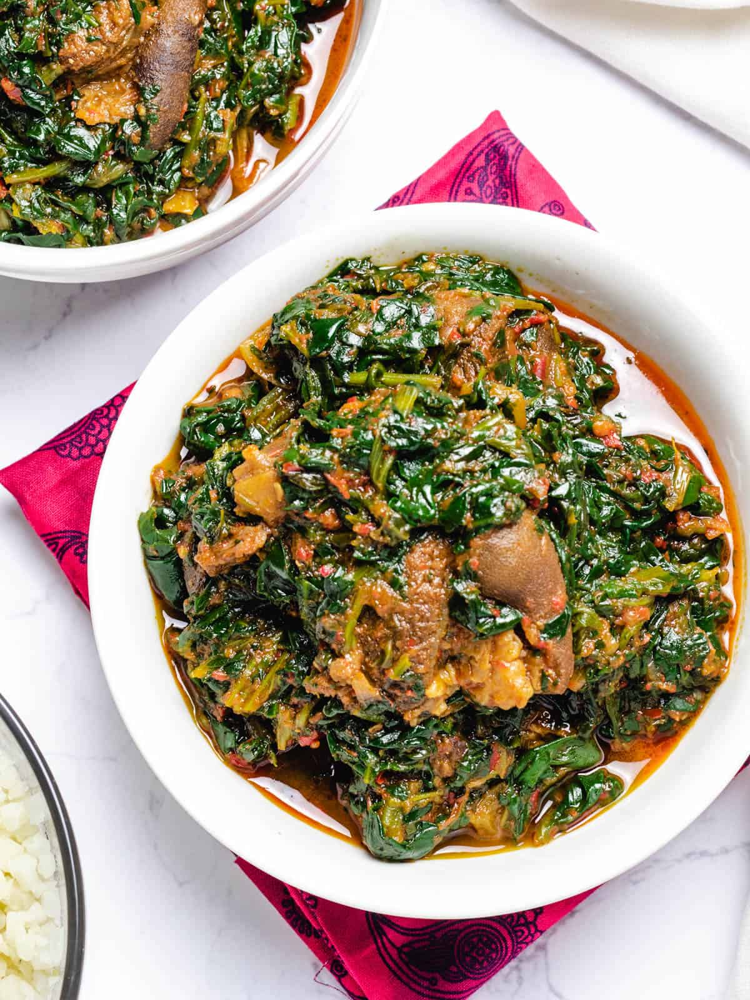

Vegetable Soup Recipe

Efo-riro is popular and known as the Vegetable soup amongst the Yoruba people of Nigeria. It is originally made with either “Efo tete” (Spinach) or Soko leaves. Although waterleaf (or “Gure” in youruba language) can also be added. Here's how to make Efo riro:
Ingredients
- A Bunch of Soko Leaves
2 Chicken (Shredded)
3 Gizzard (Cut in Bits)
1 Dry Fish
3 Teaspoons of Grounded Crayfish
4 Red Bell peppers
- 2-3 Scotch Bonnet Pepper (Ata-Rodo)
- 2 Medium-sized Tomatoes
- 2 Large Onion
- A Hand-Full of Locust beans (Iru)
- 2 Tablespoons of Palm Oil
- 2 Maggi Cubes
- 1 teaspoon of Ginger
- Chilli Powder to Taste
- Salt to Taste
- Chicken Stock
- Water